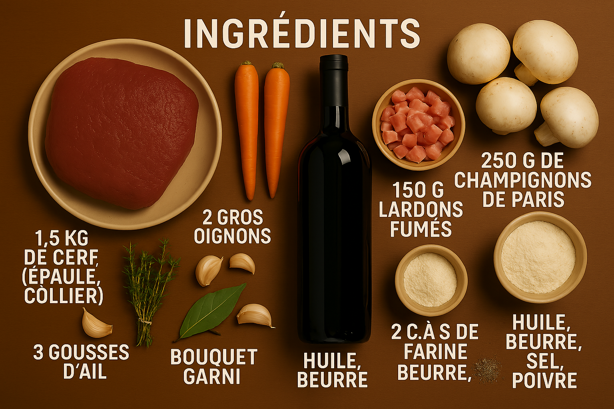

La patience est une vertu.
Le civet de cerf n'est pas un plat que l'on improvise. C'est une recette qui demande du temps, de l'attention, et qui récompense le cuisinier patient par des saveurs d'une profondeur inégalée. La viande de gibier, longuement marinée dans le vin rouge et les aromates, devient fondante et s'imprègne de tous les parfums. C'est le plat d'automne et d'hiver par excellence, un concentré de chaleur et de tradition.

Patience. Saveurs. Tradition.
La Préparation, Étape par Étape
La Marinade (la veille)
Coupez la viande en morceaux. Émincez grossièrement carottes et oignons. Dans un grand plat, mettez la viande, les légumes, l'ail écrasé, le bouquet garni et quelques grains de poivre. Couvrez avec la bouteille de vin rouge. Filmez et laissez mariner au frais pendant 12 à 24 heures.
Saisir la Viande
Le lendemain, égouttez la viande et les légumes en conservant précieusement la marinade. Épongez bien les morceaux de viande avec du papier absorbant. Dans une cocotte chaude avec un mélange huile/beurre, faites dorer la viande sur toutes ses faces. Réservez.
Créer la Base de la Sauce
Dans la même cocotte, faites revenir les lardons puis ajoutez les légumes de la marinade égouttés. Laissez-les suer quelques minutes. Saupoudrez de farine (c'est ce qu'on appelle "singer") et mélangez bien. Laissez cuire 1 minute pour torréfier la farine.
La Longue Cuisson
Remettez la viande dans la cocotte. Versez la marinade filtrée par-dessus. Portez à un léger frémissement, puis baissez le feu au minimum, couvrez et laissez mijoter tout doucement pendant 3 heures. La viande doit devenir incroyablement tendre.
La Touche Finale
30 minutes avant la fin de la cuisson, faites dorer les champignons émincés dans une poêle avec du beurre. Ajoutez-les dans la cocotte. Goûtez et rectifiez l'assaisonnement en sel et poivre.